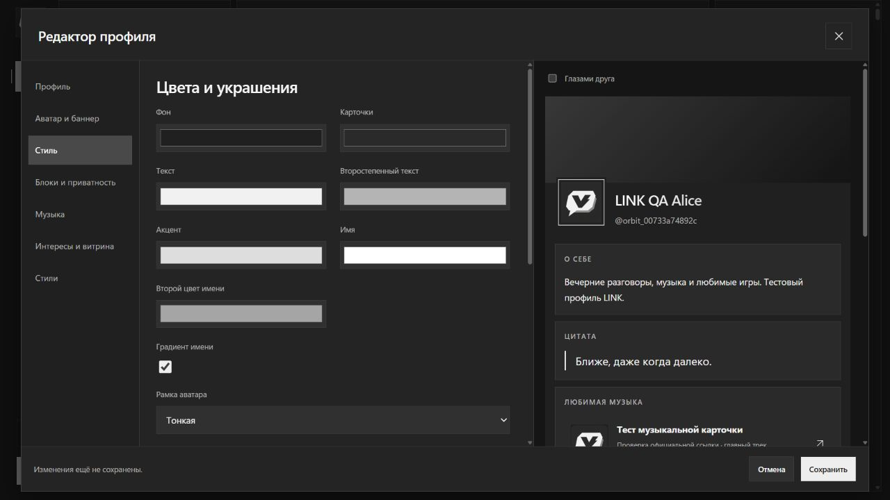

Переписка,
к которой легко вернуться.
Личные сообщения, групповые беседы и каналы на твоём сервере. Ответы, реакции, вложения, поиск и сохранённые сообщения держат важное рядом.
Сообщения, голос и демонстрация экрана. Всё, чтобы быть ближе — после работы, во время игры или просто так.
0.16.1 Windows 10 / 11 · x64 Бесплатный вход
Один общий канал для планов. Голосовая комната для вечера. Личные сообщения для того, что только между вами.
Личные сообщения, групповые беседы и каналы на твоём сервере. Ответы, реакции, вложения, поиск и сохранённые сообщения держат важное рядом.
Создай сервер, раздели темы по каналам и пригласи друзей ссылкой. Роли и права помогают управлять доступом.
Свои стикеры, GIF, статусы и оформление профиля — для разговоров, похожих именно на вас.
Посмотреть профилиЗаходи в голос, включай камеру или показывай окно и весь экран. Для совместной игры, помощи другу и вечеров без особого повода.
Аватар, баннер, любимые игры, цитата и музыкальные карточки. Собери всё в одну историю — свою.

Изображения, GIF и поддерживаемые короткие видео. Кадрирование, цвета и декоративные рамки.
Расставляй блоки, сохраняй стили и проверяй, как профиль выглядит для друга. Музыкальные карточки открывают выбранный сервис.
Для дополнительных блоков доступны настройки: общий круг, друзья или только ты.
Выбирай баланс между эффектами и нагрузкой. Невидимые анимации профилей выгружаются, а длинный список участников отображается частями.
Статичные профили и минимум необязательного декора.
Умеренные эффекты и до двух анимаций в видимой области.
По умолчаниюПолное оформление и до четырёх разрешённых анимаций.
Эти режимы управляют оформлением. Качество камеры, звука и демонстрации настраивается отдельно.
Скачай LINK, создай аккаунт и собери свой круг.
Отдельное окно, системный трей, глобальная клавиша микрофона и выбор источника демонстрации.
Скачать установщикВерсия 0.16.1 · 116 МБ · Windows 10/11 x64
Переносимая версия · 106 МБУ сборки пока нет подписи издателя. Если Windows ограничивает запуск, используй веб-версию, сохранив защиту системы.
Позволяют проверить совпадение файла с опубликованной сборкой. Подпись Windows ими не заменяется.
Открой веб-версию LINK в Edge или Chrome. В меню браузера выбери установку сайта как приложения. У него появятся отдельное окно и ярлык; глобальные горячие клавиши доступны в Windows-сборке.
Придумай никнейм и пароль. Для бесплатного входа почта не нужна. Сохрани выданный код восстановления.
Создай сервер и скопируй ссылку из меню «Пригласить людей». Каналы доступны участникам сервера.
Напиши в общий канал или заходи в голосовую комнату. Камера и демонстрация включаются, когда они нужны.
Коротко о том, что полезно знать перед первым разговором.
Текущие сообщения, профили и звонки доступны без подписки. Для соединения нужен интернет; доступность звонка зависит от сети и действующих лимитов инфраструктуры.
Никнейм, имя в профиле и пароль от 12 символов. При регистрации по никнейму почта не нужна. Сохрани код восстановления: он поможет вернуть доступ, если забудешь пароль.
Найди друга по никнейму или создай сервер и отправь приглашение. У каждого будет собственный аккаунт; переписка сохраняется на сервере приложения.
Нет. Сообщения, звонки, профили и демонстрация доступны и в веб-версии. Windows-сборка добавляет системный трей, глобальные горячие клавиши и свой выбор источника экрана.
Тестовая сборка ещё не подписана сертификатом издателя. Smart App Control может ограничить её запуск. Не отключай защиту ради установки: используй веб-версию LINK.
Попробуй обычную ссылку скачивания под основной кнопкой. Для загрузки с паузой и проверкой нужен поддерживаемый браузер и разрешение сохранить файл. Если недоступен сам сервер приложения, это может зависеть от ограничений сети или хостинга.
Исходники этого информационного сайта. Репозиторий сайта не содержит код сервера приложения, аккаунты, переписку и серверные секреты.